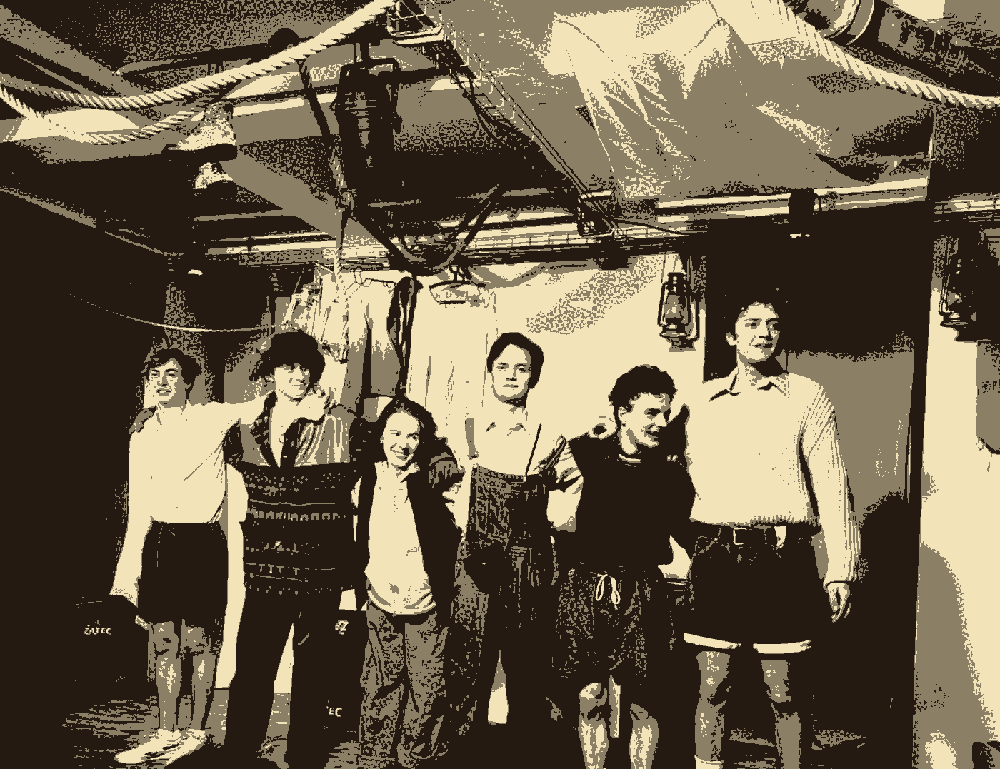
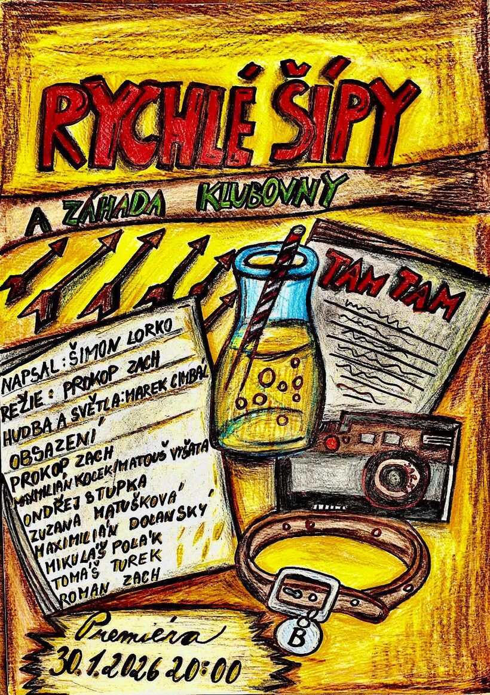
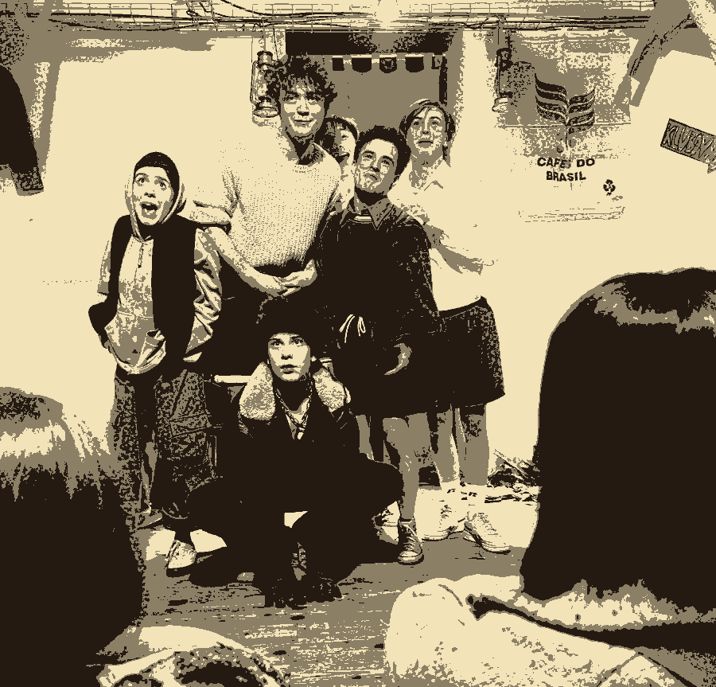
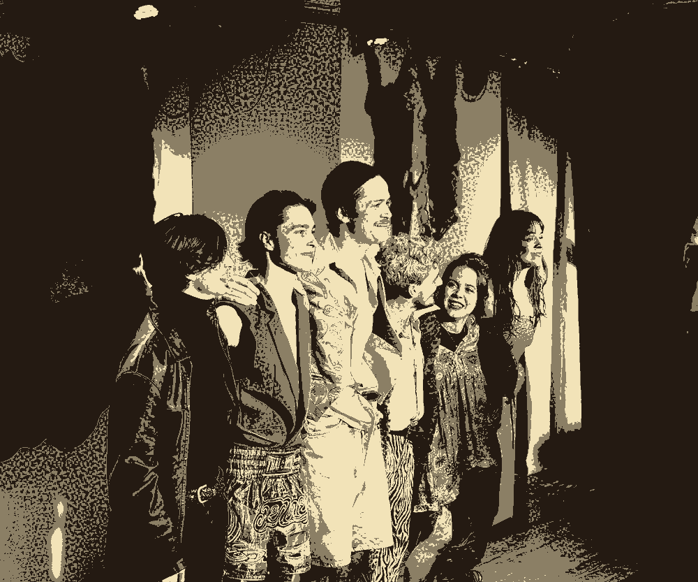
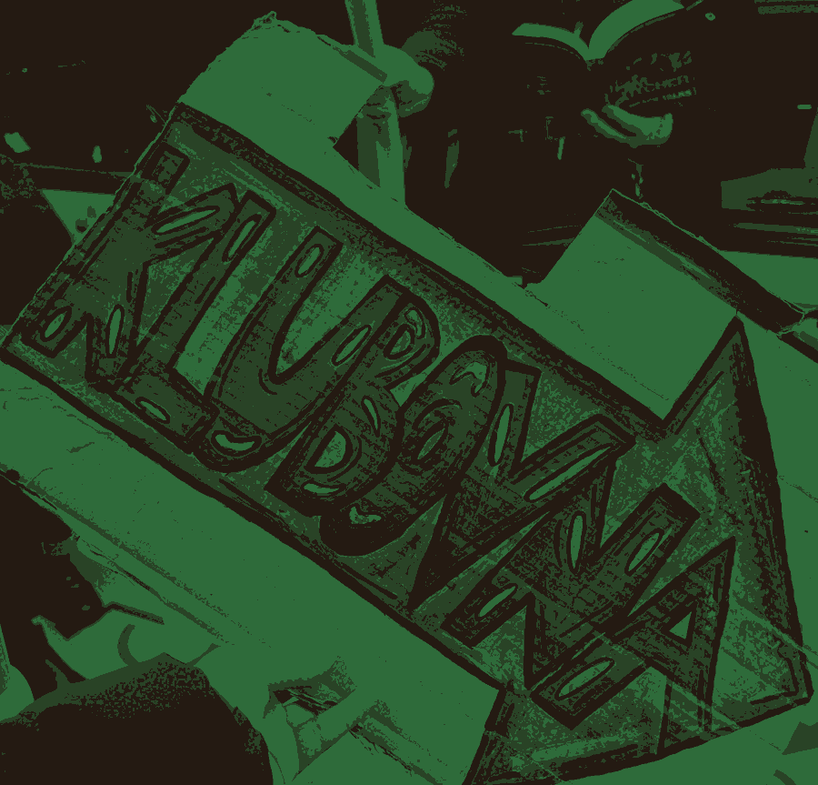
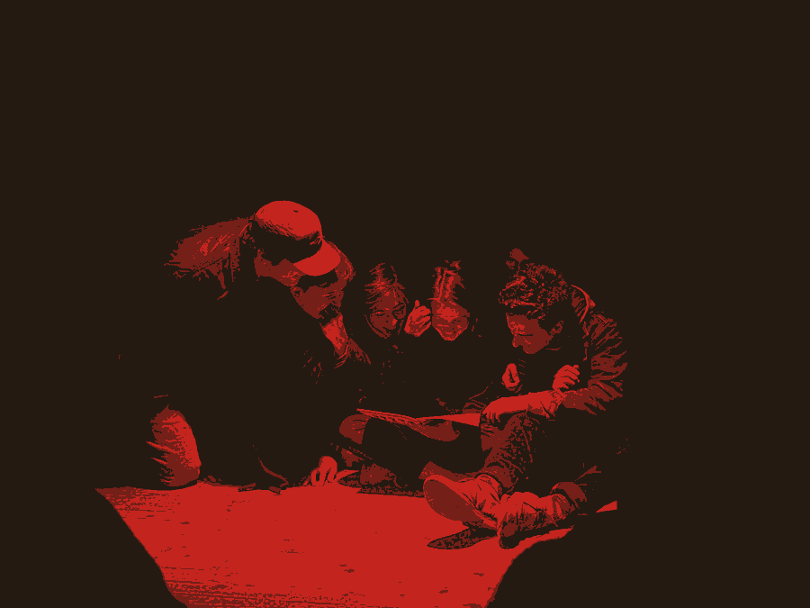

Kolekce ParchantNezávislé divadlo · Studio Citadela · Praha


Hrajeme v suterénu na Klimentské. Publikum sedí na zemi, metr od nás — a to je celý ten trik.
Tři inscenace · 23 představení · jedno jeviště
Zatím žádný
vypsaný
Nové termíny vypisujeme na GoOut. Jak se objeví tam, naskočí i sem.
Inscenace
Termíny táhneme z GoOut · naposledy 23. 5. 2026

Rychlé šípy
Foglarova parta z papíru na jeviště. Klubovna, Tam-tam, a jedna záhada, která se nedá vygooglit.
Detail inscenace
Hra lásky a náhody
Dva páry, dvě záměny, a nikdo se nepřizná první. Vyprodáno dvakrát.
Termíny na GoOutAudience
Sládek, Vaněk a pivo, které nikdy nekončí.
Termíny na GoOutSoubor
Klikni na jméno → inscenace, ve kterých hraje
O nás

Sem patří text o souboru — kdo jste, jak jste začali, proč Parchant. Zatím drží místo, aby bylo vidět, kolik ho na stránce je.
Fakta, která už na stránce jsou a jsou pravdivá: tři inscenace, dvacet tři odehraných představení, všechna ve Studiu Citadela na Klimentské, dvě z nich vyprodaná.
